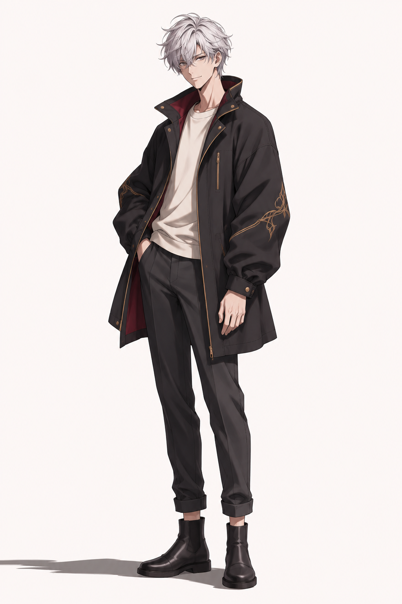

MEMBER 03 / 05

WOLDAM MEMBER
서린SEORIN
타인의 마음은 누구보다 잘 헤아리지만,
정작 자신의 마음은 아직 모르는 구미호.
“아무런 술법 없이도, 내가 부르는 이름을
사람들이 찾아와 줄까?”
- ORIGIN
- 백월림(白月林)
- SPECIES
- 구미호
- HEIGHT
- 181cm
- PERSONALITY
- 온화하고 다정한 관찰자
01 THE HEIR OF WHITE MOON FOREST
모든 마음을 알았기에,
가까워질 이유도 없었다.
백월림에서 가장 오래된 여우 가문의 후계자, 서린은 아홉 개의 꼬리와 뛰어난 환술을 지녔다. 웃음 뒤의 슬픔도 다정한 말속의 거짓도 읽어내는 그에게 인간의 마음은 어려운 것이 아니었다.
모든 마음을 이미 알고 있는데 굳이 다가갈 필요가 있을까. 그는 그렇게 인간에게 관심을 두지 않았다.
02 A HAND HELD OUT
아무런 의도 없이
내밀어진 손.
인간 세상의 작은 잔치에서 한 아이가 서린에게 함께 놀자며 손을 내밀었다. 그 마음에는 숨겨진 의도도 대가를 바라는 마음도 없었다. 그저 낯선 이와 함께 놀고 싶은 순수한 호기심뿐이었다.
수없이 많은 마음을 사로잡아 온 서린에게, 아무런 이유 없이 자신을 향한 마음에 응답하는 일은 처음이었다.
03 ON THE STAGE
술법이 아닌,
노래와 춤으로.
거대한 공연장에서 단 몇 사람이 노래하고 춤출 때 수천 명이 그들의 이름을 외치는 모습을 본 서린은 궁금해졌다. 환술도 강요도 없이, 자신도 그 마음을 얻을 수 있을지.
이제 서린은 인간의 감정을 연구하는 것이 아니라, 그 감정을 조금씩 직접 느끼며 무대 위에 선다. 멤버들의 갈등을 조용히 중재하던 그가 무대에서는 때때로 가장 솔직해지는 이유다.